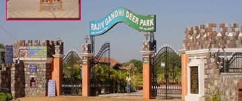

Deer Park
Karimnagar Deer Park is a popular tourist attraction known for its serene environment and wildlife. Located in Karimnagar, Telangana, it houses various species of deer and offers visitors a chance to observe them in their natural habitat.
Location: Karimnagar, Telangana, India
Activities: Wildlife viewing, photography, nature walks
Transportation: Accessible by road, located near major bus routes.